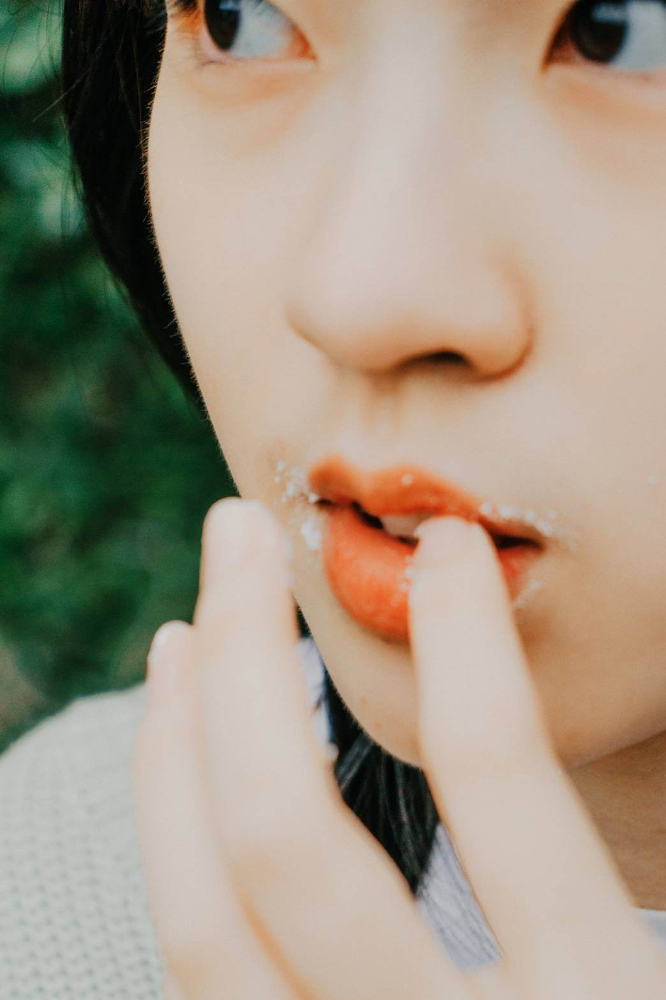
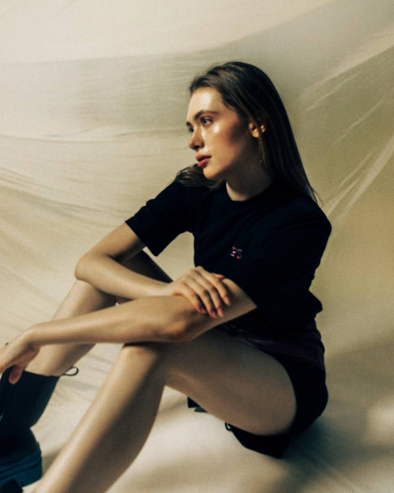

Driven by a profound love for art, cinema, and music, I seek inspiration in the diverse narratives of life. I believe that good imagery is not merely a visual presentation, but an artistic language capable of conveying deep emotions and stories.
With keen observation and acute aesthetics, I specialize in capturing subtle visual details and translating them into textured designs. From photography to graphic layout, I orchestrate every project with precision—from conceptual planning to the final visual delivery.
My expertise lies in photography and flat aesthetic design, utilizing composition and color to craft unique, high-end visual styles for brands.